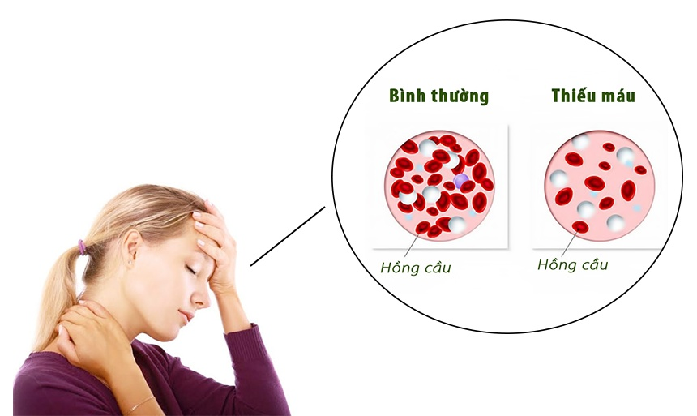
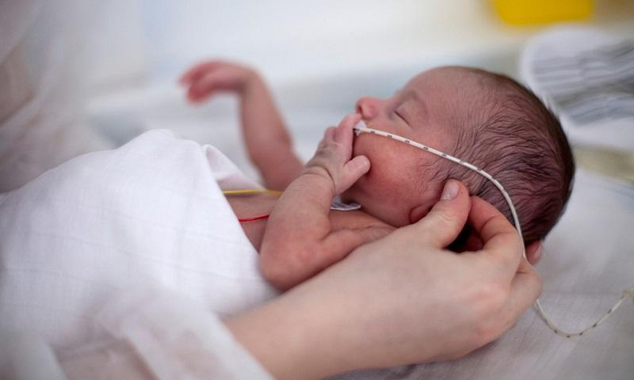

Thiếu máu (Anemia) là tình trạng số lượng hồng cầu hoặc nồng độ huyết sắc tố (Hemoglobin) trong hồng cầu thấp (dưới 120 g/L).
Năm 2021, 1,92 tỷ người trên toàn cầu mắc phải căn bệnh này (1). Theo Tổ chức Y tế Thế giới, ước tính có 40% trẻ em từ 6–59 tháng tuổi, 37% phụ nữ mang thai và 30% phụ nữ từ 15–49 tuổi trên toàn cầu mắc bệnh (2). Có thể thấy, đây là một trong những vấn đề sức khỏe gây ảnh hưởng đến phần lớn người dân trên toàn thế giới, đặc biệt là phụ nữ và trẻ em.
2. Các loại thiếu máu
1. Suy tuỷ
Suy tuỷ là một tình trạng bệnh lý xảy ra khi tủy xương không thể tạo ra đủ tế bào máu mới để đáp ứng nhu cầu hoạt động bình thường của cơ thể. Nguyên nhân phổ biến nhất gây suy tủy là do hệ thống miễn dịch của bạn tấn công các tế bào gốc tạo máu trong tủy xương.
Người bệnh bị suy tủy luôn cảm thấy mệt mỏi chóng mặt, xanh xao do tuỷ xương không sản xuất hồng cầu; dễ bị nhiễm trùng do giảm số lượng bạch cầu và chảy máu không kiểm soát được do giảm số lượng tiểu cầu. Suy tuỷ có thể diễn tiến nhanh hoặc chậm tùy theo từng trường hợp bệnh.
Suy tuỷ là một bệnh lý nguy hiểm, có thể diễn tiến nặng và đe dọa tính mạng với tỷ lệ tử vong rất cao (khoảng 70% trong vòng 1 năm) nếu không được điều trị kịp thời. Tỷ lệ sống sót chung sau 5 năm là khoảng 80% đối với người bệnh dưới 20 tuổi. Tính đến thời điểm này, không có cách nào để ngăn ngừa suy tuỷ.
2. Thiếu máu thiếu sắt
Thiếu máu thiếu sắt là loại phổ biến nhất, xảy ra khi người bệnh không có đủ lượng chất sắt trong cơ thể.
Chức năng của hồng cầu là vận chuyển oxy từ phổi đến các tế bào và mô của cơ thể. Sau đó, hồng cầu mang Carbon Dioxide, chất thải quay trở lại phổi để thải ra ngoài. Hemoglobin (huyết sắc tố) là một loại Protein giàu chất sắt trong hồng cầu có chức năng “vận chuyển” các phân tử oxy.
Nếu cơ thể không có đủ chất sắt thì tủy xương không thể tạo ra đủ lượng huyết sắc tố. Đổi lại, nếu cơ thể có lượng huyết sắc tố thấp, tủy xương sẽ tạo ra ít tế bào hồng cầu hơn và những tế bào được tạo ra có xu hướng nhỏ hơn và nhợt nhạt hơn so với hồng cầu bình thường. Các tế bào hồng cầu không thể cung cấp đủ oxy để phục vụ nhu cầu của cơ thể sẽ dẫn đến thiếu máu.

3. Bệnh thiếu máu hồng cầu hình liềm
3. Bệnh thiếu máu hồng cầu hình liềm
Đây là một dạng bệnh ảnh hưởng đến hình dạng của các tế bào hồng cầu, làm hạn chế khả năng tế bào hồng cầu mang oxy đến các mô và cơ quan trong cơ thể.
Các tế bào hồng cầu thường có hình đĩa lõm 2 mặt. Cấu trúc này khiến hồng cầu rất linh hoạt và có thể di chuyển qua các mạch máu một cách dễ dàng. Tuy nhiên, khi mắc bệnh, các tế bào hồng cầu có hình lưỡi liềm giống như chữ C. Những tế bào này kết dính lại với nhau, tạo thành cấu trúc cứng khiến hồng cầu không thể dễ dàng di chuyển qua các mạch máu, có thể gây tắc nghẽn mạch máu.
Hồng cầu bình thường có thể sống tới 120 ngày. Tuy nhiên, tế bào hồng cầu hình liềm chỉ sống được khoảng 10 đến 20 ngày. Các tế bào hình liềm có thể bị lá lách phá hủy do hình dạng và độ cứng của chúng. Ngược lại, tế bào hồng cầu hình liềm cũng có thể làm tổn thương lá lách, làm tăng nguy cơ viêm nhiễm.
4. Bệnh Thalassemia
Bệnh thiếu máu Thalassemia là do đột biến Gene tổng hợp Globin, một thành phần vô cùng quan trọng tạo nên huyết sắc tố – chất trong tế bào hồng cầu mang oxy đi khắp cơ thể. Các đột biến liên quan đến bệnh Thalassemia có thể được truyền từ bố mẹ sang con cái.
Các phân tử huyết sắc tố được tạo thành từ các chuỗi Alpha và Beta. Ở người mắc bệnh Thalassemia, việc sản xuất chuỗi Alpha hoặc Beta bị giảm, gây ra các bệnh lý Alpha-Thalassemia hoặc Beta-Thalassemia. Mức độ nghiêm trọng của bệnh phụ thuộc vào số lượng đột biến Gen di truyền từ bố mẹ sang con cái. Càng nhiều Gen đột biến, bệnh Thalassemia càng nghiêm trọng.
5. Thiếu máu do thiếu Vitamin B12
5. Thiếu máu do thiếu Vitamin B12
Đây là tình trạng thiếu các tế bào hồng cầu khỏe mạnh do lượng nguyên liệu Vitamin B12 thấp hơn bình thường.
Tình trạng này thường phát triển chậm trong vài tháng đến nhiều năm. Các dấu hiệu ban đầu có thể khó phát hiện. Chỉ khi tình trạng bệnh trở nên nghiêm trọng hơn, người bệnh có thể có các triệu chứng như da nhợt nhạt hoặc tái xanh, hồi hộp, tim đập nhanh, sụt cân, tê ngứa tay chân, yếu cơ,…
6. Thiếu máu tán huyết tự miễn
Đây là bệnh lý được đặc trưng bởi tình trạng hồng cầu bị phá huỷ bởi các kháng thể tự miễn. Sự phá hủy hồng cầu xảy ra với tốc độ nhanh hơn khả năng sản xuất tế bào mới, dẫn đến không đủ số lượng hồng cầu trong máu dẫn đến mắc bệnh.
Nguyên nhân thiếu máu
1. Do thiếu sắt
Nguyên nhân gây bệnh bao gồm:
Mất máu: Máu chứa sắt trong các tế bào hồng cầu. Vì vậy, nếu bạn mất máu, bạn sẽ mất một ít chất sắt. Có nhiều nguyên nhân gây mất máu như phụ nữ bị mất máu do kinh nguyệt, bệnh nhân bị loét dạ dày tá tràng, Polyp đại tràng, ung thư đại trực tràng, nhiễm giun sán,…
Thiếu chất sắt trong chế độ ăn uống: Cơ thể nhận được chất sắt từ thực phẩm chúng ta ăn hằng ngày. Vì vậy, nếu bạn ít dùng các loại thực phẩm giúp bổ sung chất sắt, về lâu dài cơ thể sẽ thiếu sắt và dẫn đến mắc bệnh.
Không có khả năng hấp thụ sắt: Sắt từ thức ăn được hấp thụ vào máu ở ruột non. Rối loạn đường ruột, chẳng hạn như bệnh celiac, ảnh hưởng đến khả năng ruột hấp thụ chất dinh dưỡng từ thức ăn tiêu hóa. Người từng phẫu thuật cắt bỏ một phần hoặc toàn bộ ruột non có nguy cơ mắc bệnh cao hơn do cơ thể không thể hấp thu chất sắt cần thiết.
Thai kỳ: Phụ nữ mang thai nếu không bổ sung sắt sẽ bị thiếu máu bởi lượng sắt dự trữ của cơ thể cần phục vụ lượng máu tăng lên trong thai kỳ. Ngoài ra, lượng chất sắt dự trữ này cũng như là nguồn cung cấp huyết sắc tố cho thai nhi đang phát triển nên phụ nữ mang thai cần nhiều chất sắt hơn thông thường.

Các yếu tố tăng nguy cơ thiếu máu
Một số yếu tố về lối sống, cách chăm sóc sức khỏe chưa phù hợp, tuổi tác,… cũng làm tăng nguy cơ mắc bệnh:
Thường xuyên hiến máu: Mặc dù hiến máu là điều tuyệt vời và thường được khuyến khích nhưng việc hiến máu quá nhiều lần trong thời gian ngắn có thể ảnh hưởng tiêu cực đến sức khỏe của chính bạn. Do đó cần hiến máu theo tần suất được phép để duy trì sự an toàn của chính bạn khi thực hiện nghĩa cử cao đẹp này.
Tuổi tác: Trẻ nhỏ cần nhiều chất sắt để tăng trưởng và phát triển. Nếu không uống sữa và tuân theo chế độ ăn uống dinh dưỡng hợp lý, trẻ sẽ dễ có nguy cơ mắc bệnh hơn. Ngoài ra, thanh thiếu niên cũng có nguy cơ cao hơn một chút do có xu hướng ngủ ít hơn. Việc thiếu ngủ về lâu dài có thể gây căng thẳng hơn cho cơ thể và có thể gây bệnh.
Kinh nguyệt: Phụ nữ có nguy cơ mắc bệnh cao hơn nam giới do việc chảy máu trong chu kỳ kinh nguyệt làm mất các tế bào hồng cầu.
Mang thai và sinh con: Do nhu cầu cơ thể cần nhiều máu hơn để cung cấp cho thai nhi trong khi mang thai cũng như rủi ro mất máu quá nhiều trong khi vượt cạn, phụ nữ mang thai và sinh con có nguy cơ cao hơn.
Suy dinh dưỡng: Bất kỳ ai thường xuyên thiếu các chất dinh dưỡng và khoáng chất thiết yếu trong cơ thể đều có thể bị mắc bệnh. Điều này đặc biệt đúng đối với những người bị suy dinh dưỡng.
Tiền sử gia đình: Việc có một thành viên trong gia đình bị bệnh sẽ khiến bạn có nguy cơ mắc phải cao hơn so với những người không có tiền sử gia đình mắc bệnh.
Điều trị thiếu máu
Điều trị thiếu máu
Việc lựa chọn phương pháp điều trị bệnh thiếu máu sẽ phụ thuộc vào nguyên nhân và mức độ nghiêm trọng của bệnh. Những người bị nhẹ có thể không cần điều trị. Nếu nguyên nhân là do thuốc hoặc do bệnh lý khác gây ra, bác sĩ có thể thay đổi phương pháp để kiểm soát hoặc ngăn chặn tình trạng bệnh.
Một số phương pháp phổ biến bao gồm:
Sử dụng thuốc: Người bệnh có thể được kê đơn thuốc để giúp tủy xương tạo ra nhiều tế bào hồng cầu hơn, thuốc ức chế hệ thống miễn dịch, thuốc sắt, thuốc bổ sung vitamin B12,…
Chế độ dinh dưỡng: Cải thiện chế độ dinh dưỡng luôn là lựa chọn hàng đầu với người bệnh. Cần đảm bảo chế độ ăn uống của bạn có thực phẩm giàu chất sắt, cũng như thực phẩm có chứa acid folic và vitamin B12.
Truyền máu: Truyền máu là phương pháp đưa tế bào hồng cầu khỏe mạnh vào trong các mạch máu của người bệnh thông qua đường truyền tĩnh mạch (IV). Truyền máu thay thế lượng máu bị mất do phẫu thuật hoặc chấn thương, hoặc cung cấp máu nếu cơ thể bạn không sản xuất đúng cách.
Ghép tế bào gốc: còn được gọi là ghép tế bào gốc tạo máu, mục tiêu thay thế các tế bào gốc tạo máu bị lỗi bằng các tế bào khỏe mạnh.
Phẫu thuật: Phẫu thuật có thể được chỉ định để cầm máu bên trong với các trường hợp người bệnh bị chấn thương, có tổn thương bên trong cơ thể gây chảy máu ồ ạt dẫn đến thiếu máu.